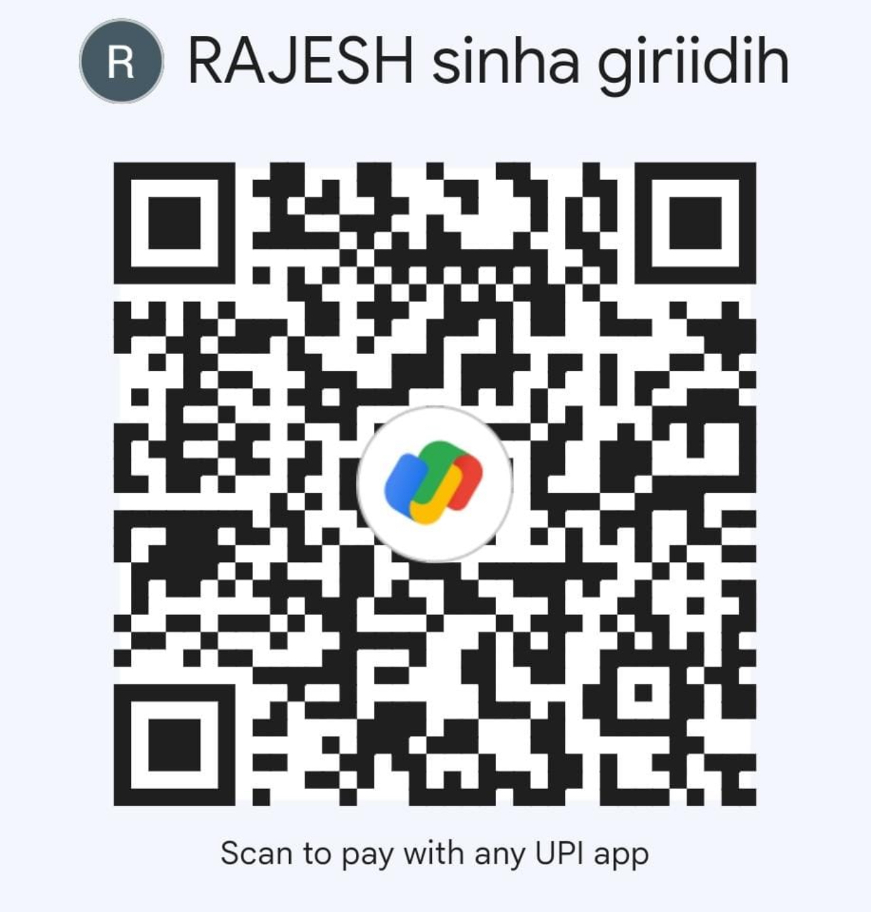

प्रिय गिरिडीह वासियों,
हमारे जीवन का आधार पर्यावरण है, और उसरी नदी इसका अमूल्य हिस्सा है। हमारी नदी, हमारी धरोहर को बचाने और पर्यावरण संरक्षण के प्रति जागरूकता फैलाने के लिए उसरी बचाओ महोत्सव का आयोजन किया जा रहा है।
इस आयोजन में हर आयु वर्ग के लिए मनोरंजन और ज्ञानवर्धक प्रतियोगिताएं होंगी। हम आपसे विनम्र अनुरोध करते हैं कि इसमें भाग लें और अपनी उपस्थिति से इस कार्यक्रम को सफल बनाएं।
महोत्सव की विशेषताएं:
• प्रतियोगिताएं:
सामान्य ज्ञान, भाषण, मेहंदी, रंगोली, पेंटिंग, फुटबॉल, क्रिकेट, वॉटर वॉलीबॉल आदि।
• प्रदर्शनियां और स्टॉल्स:
यदि आप अपनी संस्था, व्यवसाय या किसी सामाजिक पहल का प्रचार करना चाहते हैं, तो तीन दिन के लिए एक स्टॉल भी बुक कर सकते हैं।
आपकी भागीदारी क्यों है जरूरी:
हमारा पर्यावरण और हमारी नदियाँ हमारे जीवन का आधार हैं। उसरी नदी, जो गिरिडीह की जीवनरेखा है, आज प्रदूषण और उपेक्षा के कारण संकट में है। इसे बचाने की जिम्मेदारी केवल किसी एक संस्था, संगठन या व्यक्ति की नहीं, बल्कि हम सबकी सामूहिक जिम्मेदारी है। उसरी बचाओ महोत्सव के माध्यम से हम न केवल जागरूकता फैलाना चाहते हैं, बल्कि इस मुद्दे पर सभी गिरिडीहवासियों को साथ लाना चाहते हैं।
आपकी भागीदारी से इस महोत्सव को एक नई ऊंचाई मिलेगी। चाहे आप एक छात्र हों, शिक्षक, व्यापारी, समाजसेवी, या कोई आम नागरिक—आपका योगदान इस पहल के लिए अमूल्य है। प्रतियोगिताओं और गतिविधियों में भाग लेकर आप अपनी आवाज़ को उसरी के संरक्षण के समर्थन में शामिल कर सकते हैं।
यदि आप किसी सामाजिक संगठन, धार्मिक समूह, जातीय संस्था या किसी व्यवसाय का प्रतिनिधित्व करते हैं, तो आप भी इस महोत्सव का हिस्सा बन सकते हैं। आप अपने विचार साझा कर सकते हैं, जागरूकता फैलाने में मदद कर सकते हैं, या तीन दिनों के लिए एक स्टॉल बुक करके अपनी पहल, सेवा या उत्पाद का प्रचार कर सकते हैं। यह महोत्सव केवल मनोरंजन का मंच नहीं है, बल्कि एक ऐसा मंच है जहाँ आप अपने प्रयासों को सही दिशा में लगाकर गिरिडीह के भविष्य को संवारने में योगदान दे सकते हैं।
आइए, मिलकर इस महोत्सव को एक आंदोलन बनाएं और उसरी नदी को बचाने की दिशा में ठोस कदम उठाएं। आपकी उपस्थिति और भागीदारी इस मुहिम को एक नई ऊर्जा और प्रेरणा देगी।
